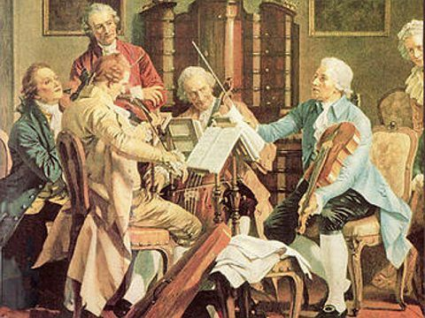
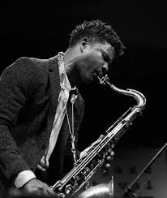
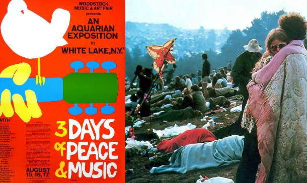

Lysergic Acid - Evolucion de la musica
A lo largo de la historia la musica a experimentado una serie de cambios que han dejado huella hasta nuestros dias, a continuacion haremos un breve recorido de los periodos historicos en los que el arte evoluciono, conoceremos algunos de sus precursores y obras. durante los siglos XV y XVI se desarrollo en europa un movimiento cultural, el renacimiento, italia fue el nucleo principal de este movimiento que dio sus primeras manifestaciones en ciudades como florencia, mas tarde en roma,los hombres y las mujeres que protagonisaron trataron de de poner de nuevo a la moda la antiguedad griega y latina, el renacimiento fue tanto una forma de cultura definidora de una epoca como tambien una forma de pensar y de vivir, El renacimiento se extendio a los palacios de la nobleza dejando de depender unicamente unicamente con la filosofia de la iglesia, en la nobleza comenzo a ser valorada por si misma, por su capacidad par transmitir emociones y sentimientos, y a practicarse por placer y por su propia belleza principes y grandes duques mantenian agrupaciones de musicos llamadas capillas. La musica renacentista no fue un restauracion de la antiguedad grecolatina ya que no se podia conocer la musica griega y romana con la misma precision que su arquitectura y escultura por el contrario la musica del renacimiento fue mas bien la culminacion de la polifonia del gotico, la polifonia es la tecnica compositiva que combina varias melodias simultaneamente y que se desarrollo y perfecciono en el renacimiento, la polifoia es una textura que podemos encontrar de forma vocal, instrumental o mixta dando origen a la estructura de las melodias de hoy en dia.
El siglo XVIII fue el de la ilustracion y su estetica se traslado al estilo musical, gusto por lo natural, lo equilibrado y lo claro, rechazo el artificio y el exceso de sofistificacion de la musica barroca, imitacion de la naturaleza en forma de estructuras simples y frases simetricas similares a la de la musica Folklorica, en la opera encontramos la berosimilitud y la cercania del espectador de los argumentos e integracion del drama con la musica, ademas el publico de la musica culta se extendio de la vieja aristocracia a la pujante burguesia, que compraba masivamente ediciones de partituras y llenaba los teatros de opera y de concierto, lo que impulso a los compositores a acercar su estilo a lo popular, la difusion de la musica aumento y se internacionalizo y con ella la fama de los compositores mas destacados como resultado los estilos de Europa se unificaron y los autores mas conocidos hicieron frecuentes giras por las principales capitales. Como consecuencia de ello la estructura basica de las melodias de hoy en dia. Asi con el tiempo con el tiempo entre el siglo XVIII y el XIX se fue agregando arreglos en las partituras asi creando nuevas especificaciones de sonidos, dando origen a la evolucion de la musica actual del siglo XIX.
El comienzo de la evolucion, Despues de este periodo de tiempo los compositores de estados unidos producieron musica impactante para la gente de la epoca debido al desprecio de las convenciones musicales, convinaron frecuentemente musica pupular con la aglutinacion, extremas disonancias y una complejidad arritmica en apariencia inejecutable dando origen al Jazz, El Jazz es una forma de arte musical que se origino en los estados unidos mediante la confrontacion de los negros con la musica europea, la instrumentacion, melodia y armonia del jazz se derivan principalmente de la de la tradicion musical del occidente, el ritmo, el fraseo y la produccion de sonidos y los elementos de armonia del Blues se derivan de la musica africana y del concepto musical de los afro americanos, Existen 3 elementos principales que diferencian al Jazz de la musica clasica Europea. Una cualidad ritmica conocida como Swing, el papel de la improvisacion, un sonido en un fraseo que refleja la personalidad de los musicos ejecutantes, a lo largo de la historia el jazz a pasado de ser una simple musica de baile popular a una forma de arte reconocida en todo el mundo.Paralelamente a dicho progreso han cambiado tambien las actitudes hacia esta musica, en 1944 un periodista del New York Times se referia a ella como el retorno de la -musica de los salvajes mientras que en 1987, el congreso de los estados unidos de america, declaraba al jazz como un destacado modelo de expresion el motor de dicho progreso ha sido la inovacion una particularidad que siempre ha estado presente en la historia de esta musica dirigiendo su evolucion y caracterisando la obra de sus artistas mas destacados a lado de una rama mas tradicionalista, paralelamente a esta decotomia entre la inovacion y la tradicion el jazz se ha movido entre la obra de unos artistas que solo han buscado el reconocimiento de una pequeña pero selecta audiencia, y otros que han dirigido sus esfuerzos a una audencia mas amplia, la identidad musical del Jazz es compleja y no puede ser delimitada con facilidad, en primer lugar aunque a menudo el termino se use para hacer referencia a un idioma musical cuando se habla de musica clasica, el jazz es en realidad una familia de generos musicales que comparten caracteristicas individuales comunes el trasfondo de este genero no solo de limita a un tipo de musica, si no que su ambiente de inovacion hace que una cantidad selecta de personas recapaciten abrieran su mente a lo desconocido, si bien el jazz es un producto de la cultura afro americana siempre a estado abierto a influencias de otras tradiciones musicales ya desde la decada de 1920 ha sido interpretado por musicos de distintas partes del mundo con un transfondo nuevo cada vez nuevas influencas.
Pasado casi dos decadas llega una revolucion psicodelica, el descubrimiento del LSD (Dielitamida de Acido Lisergico) Fue una oportunidad de abrir nuestra mente como sociedad, librarnos de la codicia que carga la humanidad, solo que se descubrio muy temprano, y por una cantidad selecta de personas, pero la razon fue que el conflicto que se genero en el momento fue la segunda guerra mundial, y no se conocia bien las propiedades de este enteogeno que servian para sensibilizar a una persona, y en pleno conflicto mundial no fue la mejor opcion los de la generacion baby boomer (Hippies) le pintaban el dedo a todo lo que tuviera facha militar y politica, la propaganda de la guerra estaba por todos lados mientras Estados unidos buscaba cualquier pretexto para iniciar una guerra en busca de expandirse y ganar recursos, como prueba de ello, la guerra de vietnam, todo giraba en torno a la guerra, el destino de niños hombres y mujeres estaba atado al conflicto, los hombres eran reclutados y mandados al ejercito, y eso es hablando de america por que del otro lado del charco no era mejor, la continua expansion por parte de alemania traia a gente con miedo buscando cualquier señal de tranquilidad, la generacion del "Peace and Love" de los hippies no es tan amorosa como la cuentan la verdad es que este movimiento se genero mediante a la guerra como contraparte esto orillo a varios artistas y gente sensible a vivir con miedo generando una esperanza en la musica, el conocimiento de años de musica derivada de generos, pasando por el blues y una mescla de una mente trantornada por LSD creo la musica psicodelica, muchos artistas de la epoca al usarlo cambio muchas vidas para bien o para mal, en varios casos dejando un legado al mundo muy grande, buscaban esperanza a pesar de los conflictos, y la mejor forma para llegar a las masas fue con la musica, con la creacion de la musica pregrabada en los discos de acetato llegaban a muchas personas, esta deformacion marco a la musica para siempre le dejo en la mente de las personas, la empatia y la diversidad cultural y comenzo una fucion de distintos generos abriendo nuevas posibilidades de sonidos y tantas formas de expresar arte y causar emociones. Esta vida es muy equilibrada donde ay un mal debe existir su contraparte, la que en un futuro nos recordara nuestra torpeza, las guerras son marcas del pasado que sirven de recordatorio de la torpeza humana, pero de los errores se aprende, y el humano es el unico capaz de recordar sus errores, estamos destinados a ser mejor y cambiar de pensamiento constantemente para no cometer los mismos errores.
Pasada esta epoca y el comienzo de los 2000 que se acercaban y con ello el internet era el fin de una era, los dicscos de acetato y el cd no podian competir contra contra la nueva era digital que permitia descargar cualquier cancion gratis, en esta etapa el mundo empezo a adaptarse a los nuevos cambios que se avesinaban, como prueba de ello una mejor manipulacion de los archivos mediante computadores como lo hacemos hoy en dia, pero antes no era tan facil ni rapido, ya que sus recursos eran algo limitados a comparacion de lo que tenemos hoy en dia, despues de la revolucion psicdelica los cambios en la musica se eran cada vez mas notable por que evoluciona a los recurso que tenemos dejando como legado al mundo unas mentes muy experimentales, y aqui es cuando empieza a tomar sentido el ahora, somos años de evolucion de una mentalidad.